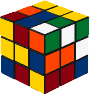
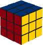
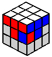
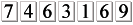

|  | Beginner Solution to the Rubik's CubeHome | Rubik's 25th Anniversary | RWC2003 | Rubiks links Translations: Italian | German | Spanish introduction | structure of the cube | cube notation |
 |
|
| ||
Introduction
There are many different methods for solving the Rubik's cube. They can be divided into two broad categories: layer methods and corners first methods (and there are sub-categories within these broad categories). The method I use for speedsolving is a layer based method. More specifically, the method I currently use is: cross, F2L, 3-look LL (I know some of the OLLs, so sometimes I can do a 2-look LL). If you are a newbie cuber then this description may not mean much to you, so I should add that it's the 'Advanced Solution' I described in the Next Steps section at the end of this page.
Many years ago when I wrote this webpage there were many great websites that explained advanced and expert methods for solving the cube (check out my Rubiks links page), however, there were very few that explained beginner methods. This is the reason I wrote this page. It's not meant to be a totally comprehensive explanation, it's really just some notes I threw together for some friends I was teaching. I thought it might be useful for others, so I've turned it into a webpage.
This beginner method requires memorising only a few algorithms, and when done efficiently can achieve solves of 60 seconds or faster. I know people who can solve in 20-30s with a method like this. I haven't been able to solve so fast with a beginner method, so don't be too distressed if you can't either. On the other hand, if you can do 30s solves with this method, then you are too good for this method and you should be learning an Advanced or Expert method!
Aside from minimal memorisation, another benefit of this method is that it is very scalable. More algorithms may be added later to develop it into an advanced method, or if you're really keen, an expert method. This means you don't need to scrap it and start again to move to an expert method. Everything you learn here will be useful for more advanced methods.
Structure of the cube
We all know that 3x3x3=27, however, rather than thinking about the cube as 27 little "cubies", think about it as 6 fixed centres (that can rotate on their own axis) with 8 corners and 12 edges which rotate around it. As the centres are fixed, the centre colour defines the colour for the face. It's important to remember this otherwise you'll end up trying to do illogical (mechanically impossible!) things like wondering why you can't work out how to put a corner piece in an edge position, or assuming that you're looking at the blue face merely because 8 of the 9 cubies on it are blue (if the centre is white then it's the white face).
Terminology
When describing the solution for the 2nd and 3rd layers, standard cube notation will be used. Here's what you need to know to read it:
F = front face |
B = back face |
R = right face |
L = left face |
U = up face |
D = down face |
In addition to a letter, each move may be accompanied by an apostrophe or the number two:
- A letter by itself means turn that face 90 degrees clockwise (eg. F).
- A letter followed by an apostrophe means turn that face 90 degrees anti-clockwise (eg. F').
- A letter followed by the number 2 means turn that face 180 degrees (direction is irrelevant), (eg. F2).
So R U' L2 is shorthand for "turn the right face 90 degrees clockwise, then turn the up face 90 degrees anti-clockwise, then turn the left face 180 degrees". When thinking whether to turn clockwise/anti-clockwise, imagine that you are looking directly at the particular face you are turning.
For each algorithm, the notation is written with the assumption that the core of the cube remains fixed throughout the whole algorithm, and the faces just turn around it. This means that you also need to know how to position the cube to start the algorithm.
For pictures and further detail about cube notation, have a look at
Jon Morris' cube notation page.
The Solution
The First Layer
The first layer is solved in two stages:
- Form the cross
- Insert the 4 first layer corners (each corner is inserted individually)
I believe that the first layer should be done intuitively. You need to understand it and solve it without learning algorithms. Until you can do this, I wouldn't bother attempting the rest of the cube! So, spend some time playing with the cube and familiarising yourself with how to move the pieces around the cube.
Now, here are some tips to get you started.
The Cross
I prefer to start with the white cross because I find white easier to quickly identify on a completely scrambled cube, however, you can use any colour.
There are 4 edge pieces with white (ie. the 4 arms of the cross) which have specific positions. You can't put any white edge piece in an arm of the cross because the other colour on the edge cubie must match up with it's centre on the middle layer.
Here is a pic of what a correctly formed cross looks like (grey denotes cubies that are irrelevant to the cross). Note that the white/red edge cubie matches up with the white centre and the red centre. Ditto re the white/blue cubie. |
Here's a pic on an incorrectly formed cross. Looking at the white face we do indeed see a white cross, however the white/red edge cubie does not match up with the red centre. Ditto re the white/blue cubie. This is bad! |
For a detailed explanation of the cross, check out Dan Harris' Solving the Cross page.
The First Layer Corners
Once you have completed the cross, completing the first layer requires inserting each of the 4 corners in separately. The first thing to do is examine your cube and locate all of the top layer edge pieces - they will be sitting in either the first layer or the last layer. Inserting the first layer corners should be done intuitively, not by learning algorithms. To get you started, here's a step-by-step example of one way to insert a first layer corner.
Step 1 The blue/red/white corner is sitting in the bottom layer (the blue part is facing the bottom so we can't see it in this picture). Turn the blue face 90 degrees anti-clockwise. |
Step 2 Now your cube should look like this. Move the D face 90 degrees anti-clockwise to line up the blue/white edge with the blue/white/red corner. |
Step 3 Now that the blue/white edge and the blue/white/red corner have been lined up, re-form the white cross by turning the blue face 90 degrees clockwise. |
Step 4 Now the blue/white/red corner is in its correct place. |
Here are some tips for inserting the top layer corners:
Start with a first layer corner that is sitting in the last layer.
If there are multiple first layer corners in the last layer (there usually will be), start with one that does not have the white part of the corner on the face opposite the white face. Or, if you were using a different colour for the cross ('colour X'), start with a corner that does not have the 'colour X' part of the corner on the face opposite the 'colour X' face.
When working with a first layer corner piece that is in the first layer (but in the wrong first layer corner position), you will need to get it out of the first layer into the last layer, then insert it into the correct first layer corner position. The same principle applies if a first layer corner piece is in the correct first layer corner position but needs to be flipped around. You need to get it out of the first layer (ie. into the last layer), and then re-insert it into the first layer the correct way around.
|
|
This is what the first layer should look like when finished. |
The Middle Layer
The middle layer consists of one stage:
- Insert the 4 middle layer edges (each edge is inserted individually).
You only need to learn one algorithm (plus the mirror algorithm) for the second layer. There are many more algs, but let's just learn the essential one first.
First, locate a middle layer edge that is currently sitting in the last layer. I'm going to use the blue/red edge for this example.
|
|
This blue edge cubie in the last layer is the blue/red edge cubie. |
In this picture, U=white, L=red and F=blue. We can't see the other three faces, but obviously the R face is the one opposite the L face, the D face is opposite the U face and the B face is opposite the F face.
Now, position the blue/red edge piece so that the colour on the side of the cube (blue in this case) lines up with it's centre. Now perform the following algorithm: D L D' L' D' F' D F
If the blue/red edge piece was flipped the other way so that the blue was on the bottom rather than the red, you would position the cubie under the red centre and perform the following alg: D' F' D F D L D' L'. This is the mirror of the previous algorithm. The axis of symmetry lies diagonally across the white face, and along the line which divides the blue face and the red face.
|
What if the edge piece is not in the last layer? The instructions above assume that the middle layer edge piece you are inserting is sitting somewhere in the last layer. If some middle edges are in the last layer and some are in the middle layer in the wrong spot, always start working with the edge pieces that are in the last layer. After you've done this, sometimes (but not too often) you'll be left with a middle layer edge piece that's in the middle layer but in the wrong spot. In this situation, you can use the same middle layer algorithms from above (D L D' L' D' F' D F or D' F' D F D L D' L') to insert another edge piece into the middle layer edge position, thereby knocking the middle layer edge piece out of its spot and into the last layer. Once you've done this, the middle layer edge piece is in the last layer and you can deal with it in the usual way. There is a short-cut to this problem, but as this is a beginner solution with minimal memorisation, I haven't included it here. If you really want to learn it, take a look at Case Dd2 on Dan Harris' site. |
 The red/blue middle layer edge piece is in the middle layer but not oriented correctly. It needs to be moved to the last layer, then put back into the middle layer in the right way. |
The Last Layer
The last layer ("LL") is done in 4 steps:
- Orient the edges (2 algs) - i.e. form a cross on the D face.
- Permute the corners (1 alg) - i.e. get the corners in the correct position in 3D space (don't worry if they still need to be rotated).
- Orient the corners (1 alg + mirror alg) - i.e. flip the corners.
- Permute the edges (1 alg) - i.e. swap the edges around. The cube should now be solved! :)
All last layer algorithms are performed with the cross (i.e. the first layer - white side in this example) on the bottom.
Orienting the LL Edges
Once you have completed the first two layers ("F2L"), hold the cube so that the white side is on the bottom. The white side will be on the bottom for the remainder of the solution. This means that the white side is the D side for all last layer algorithms.
On my cube, white is opposite yellow, therefore yellow is the U face for all last layer algorithms on my cube. Note that your cube may have a different colour opposite white (e.g. blue). Now have a look at your last layer, and in particular, look at the last layer face - there are 4 possible patterns of LL edges that you may see.
State 1 |
State 2 |
State 3 |
State 4 |
Unlike with the initial cross (where all the edges must match up with the white centre and with the centres on the middle layer), here all you need to worry about is getting all the last layer edges matching up with the last layer centre. It doesn't matter if the other colour on the LL edge piece does not match up with the colour on the middle layer centre. Also, ignore the LL corners too. It doesn't matter what they are doing at the moment. Now, let's consider each of these LL edge states separately.
|
State 1 All the edges are already oriented correctly. Move on to permuting the corners. |
|
State 2 We are going to re-orient our faces for this algorithm. The face you are looking directly at in this picture is now the U face (it was the D face for when you were doing the second layer edges). Perform the following algorithm: F U R U' R' F' |
|
State 3 As with State 2, the face you are looking directly at in this picture is now the U face. Perform the following algorithm: F R U R' U' F' |
|
State 4 State 4 is really a combination of States 2 and 3, so all you need to do is perform the algorithm for either State 2 or State 3. Once you've done this, you'll see that your LL edges now look like State 2 or State 3, so just perform the appropriate algorithm and you will have a cross on the LL. |
Permuting the LL Corners
The two possible states are:
- two adjacent LL corners need to be swapped; or
- two diagonal LL corners need to be swapped.
These are the only two possible states. If you cannot identify one of these two states with your LL corners then one or more of the following must be true:
- You have not finished the F2L.
- Someone has ripped out a corner of your cube and put it in the wrong way.
- Someone has ripped off some of your stickers and put them back in the wrong place.
- You are not looking hard enough. ;)
Swapping adjacent corners
Hold the cube with the white side on the bottom, and the two corners to be swapped are in the front right top and the back right top positions. Perform the following algorithm: L U' R' U L' U' R U2. To see an animated version of this algorithm, see the first algorithm on Lars Petrus' Step 5 page. On Lars' site, the algorithm is being executed from a slightly different angle (the two corners being swapped are front-top-right and front-top-left), but it is the same exact algorithm.
Swapping diagonal corners
Swapping diagonal corners can be done by executing the adjacent corner swap algorithm twice. Perform it once to swap any two LL corners. Re-examine you cube and you'll see that now there are just two LL corners that need to be swapped. Position it correctly for the final LL adjacent corner swap and perform the LL adjacent corner swap algorithm.
Orienting the LL Corners
There are 8 possible orientation states for the LL corners. One is where all 4 corners are correctly oriented. The other 7 look like this.
State 1 |
State 2 |
State 3 |
State 4 |
State 5 |
State 6 |
State 7 |
|
State 1. Twisting three corners anti-clockwise R' U' R U' R' U2 R U2 |
|
State 2. Twisting three corners clockwise R U R' U R U2 R' U2
|
States 3-7
Once you know the algorithms for States 1 and 2, you can solve any LL orientation State. The remaining States can be oriented using a maximum of 2 algorithms. You will need to do one of the following (i) the State 1 algorithm twice, (ii) the State 2 algorithm twice, (iii) the State 1 algorithm, then the State 2 algorithm, or (iv) the State 2 algorithm, then the State 1 algorithm.
In a previous edition of this solution, I had said that I'm not going to tell you exactly how to combine the State 1 and State 2 algorithms to solve States 3-7. My reason for this was because it is important that you try to understand how the State 1 and the State 2 algorithms work, and that once you do understand them you will be able to work out how to use them to solve all the States. I still believe this, however, I received emails from a few people who were having trouble with States 3-7, so I decided to write some extra tips. I still suggest that you try to work out States 3-7 by yourself, but if you are really stuck, have a look here: Orienting the Last Layer Corners: further tips.
Permuting the LL Edges
There are 5 possible permutation states for the LL edges. One is where all 4 edges are correctly permuted. The other 4 look like this.
State 1 R2 U F B' R2 F' B U R2 |
State 2 R2 U' F B' R2 F' B U' R2
For an animated version of this algorithm, see the Lars Petrus' Allen algorithm. The algorithm is being executed from a slightly different angle, but it is the same exact algorithm. |
State 3 Apply the algorithm for either State 1 or State 2. Re-examine your cube and it will now look like State 1 or State 2. |
State 4 Apply the algorithm for either State 1 or State 2. Re-examine your cube and it will now look like State 1 or State 2. |
And that's all you really need to know to solve the Rubik's Cube! With practice, you should be able to achieve times of 60 seconds (or faster) using this method. Once your comfortable with this method and want to learn more, take a look at the following section.
Next Steps
If this beginner method is too easy and boring for you then consider the following.
Intermediate method
Solve each first layer corner + corresponding middle layer edge in one step. This means that after the cross you only have 4 steps (4 corner/edge pairs) to complete the F2L. With this beginner method there are 8 steps: solve each of the 4 first layer corners, then solve each of the 4 middle layer edges. I'd suggest just playing around with your cube and figuring out the F2L corner/edge pairs yourself. For some hints about solving the F2L intuitively, have a look at Doug Reed's intuitive F2L guide. If you're still stuck and just want the algorithms, check out Dan Harris' F2L page and Jessica Fridrich's F2L page.
Learn the 4 specific algorithms (or rather, 3 algorithms plus one mirror algorithm) for each of the 4 different permutation states of the LL edges. My beginner solution already shows you 2 of the 4 last layer edge permutation algorithms, the other two last layer edge permutation algorithms are Case #5 and Case #17 on Dan Harris' PLL page.
Advanced method
Learn everything from the Intermediate method.
Learn the 3-look LL. This requires learning the 7 specific algorithms for the 7 different orientation states of the LL corners, and learning the 21 PLL algorithms (permuting the last layer algorithms) so you can permute the LL edges and LL corners at the same time. A full 3-look LL uses 30 algorithms.
For more details about the advanced method, check out t Rubiks Galaxia 3-look LL, Dan Harris' site and Lars Vandenbergh's PLL page.
Expert method
Do the F2L in 5 steps (first dot point from the Intermediate method).
Learn a full 2-look LL. This requires memorising 21 PLL algorithms, plus 57 OLL algorithms (orienting the last layer algorithms).
For more details about the expert method, check out Dan Harris' site, Joël van Noort's site and Lars Vandenbergh's site.
Other stuff
The method I've documented here is what I believe to be a good beginner method. The problem with some beginner methods is that they are not scalable - to improve your cubing you have to un-learn much of what you know and re-learn it in a different way. This method focuses on memorising very few algorithms, but is structured in a way that allows for development into an intermediate or advanced method. Other thing I should say is that I didn't actually devise any of the last layer algorithms in this method. I merely chose a selection of existing algorithms (sourced from a variety of places including Jessica's site and Dan K's site) and organised them into a simple solution method.
Celebrate your cubing success!
When you are confident that you can solve the cube by yourself, time yourself so you can keep track of your progress. Also, consider submitting your time to the unofficial world records.
You are cuber number...
|  |
... to visit this page
Home | RWC2003 | Rubiks Links | Rubik's 25th Anniversary |
Page last modified Thursday 17 July 2008 by Jasmine Lee